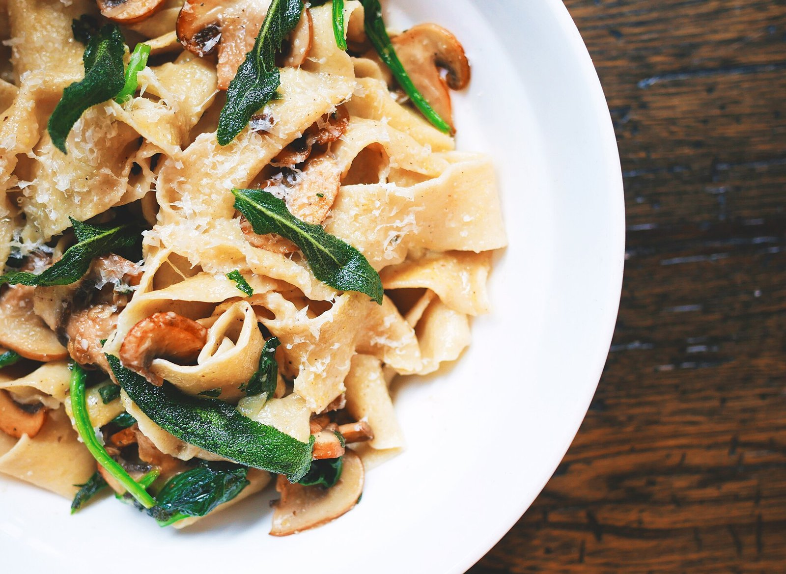
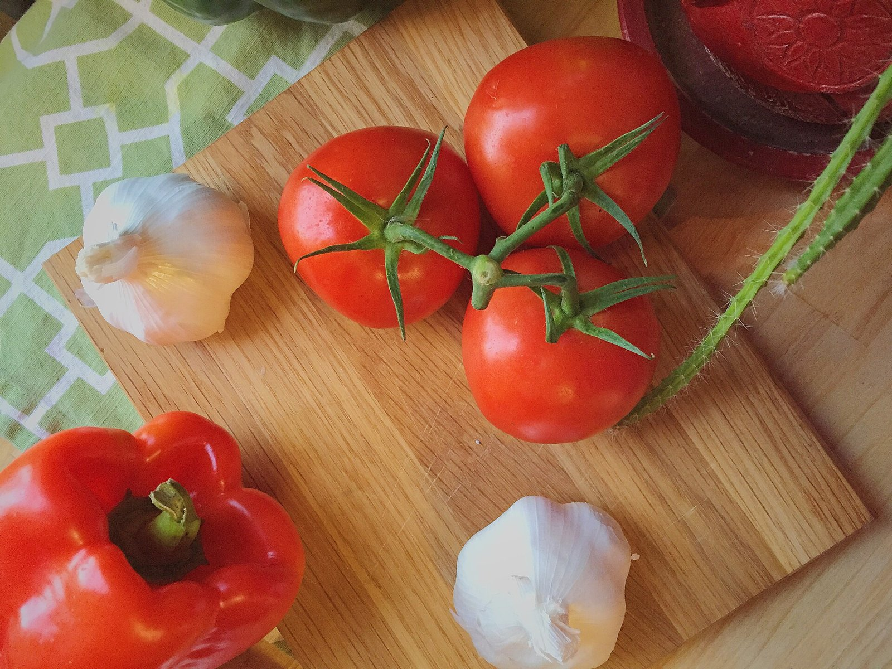

北海道苫小牧市住吉町 / CAFE
RINON落ち着いた空間で、
パスタとドリアのランチを、ゆっくりと。
リノンは、苫小牧市住吉町のカフェです。大人っぽく落ち着いた雰囲気のなかで、ひと皿ずつ味わう昼のひとときを。
ABOUT
2023年秋、住吉町にひらいたカフェ。
紹介ブログや口コミによると、リノンは2023年9月下旬に苫小牧市住吉町にオープンしたカフェです。店の前は駐車場になっていて、外観や内装が素敵で、大人っぽく落ち着いた雰囲気と紹介されています。ママ友やご家族とのランチ、デートにも、と書かれています。
お料理はパスタが中心で、ハンバーグ、ドリア、カレーも。ランチにはサラダとパン(フォカッチャ)が付くと紹介されています。また、中学生未満のお子さまの入店はお断りしている旨が、店頭やInstagramに記載されているそうです。
情報源: 苫小牧ブログ(2023年12月) / Ameba ブログ / 食べログ / Instagram
店名「リノン」の意味や由来は確認できていません。上記以外の言い回し(見出し等)は制作側の表現です。情報は掲載元の時点のもので、最新の状況はInstagramなどでご確認ください。


MENU
パスタを中心に、ハンバーグ、ドリア、カレー。
紹介記事などで確認できたお料理の種類です。内容・価格・提供時間は変わることがあるため、詳細は準備中としています。



VOICE
こんなお声が聞けたら(イメージ例)
以下は制作側が作成した「イメージ例」で、実在のお客様の声ではありません。
イメージ例
落ち着いた雰囲気で、ゆっくりお昼を食べられました。パスタにサラダとパンが付いていて、満足です。
イメージ例
友人とのランチに。静かに話ができる空間で、ついつい長居してしまいました。
イメージ例
食後に紅茶とケーキをいただきました。また季節のメニューを味わいに行きたいです。